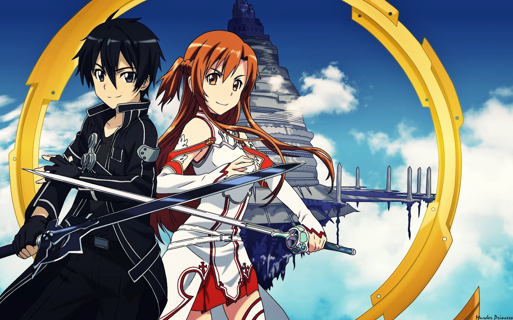

Chotto
ItsAnime
Menu
Home
Anime
Youtube
About
Show All
Action
Adventure
Romance
Slice Of life
Attack On Titan
Words can't describe the overwhelming action in this anime
Hunter X Hunter
With character design that would blow your mind and great fights
One Piece
This features duels with supernatural powers, fun characters, and tons of pirates
Fairy Tail
Fairy Tail is a 175 action/fantasy series that packs one hell of a powerful punch
Claymore
In a world rife with deadly creatures called "youma", a young silver eyed woman, Clare..
Bleach
This anime follows a boy named Ichigo, a gifted kid who happens to be more than just a normal teenager. Bleach is both fast paced and slow at times..
Naruto Shippuden
This is truly a masterpiece. It has some of the greatest fight scenes of all animes for sure. One the definitely be watched.
Cowboy Bebop
This Anime is one of those series that is just impossible to criticize, its a very good anime that deserves to be on this list.
Angel Beats
Angel Beats is a rare anime able to be both comedy and tearjerker without either feeling out of place in either the world or narrative.
Tri-Gun
Angel Beats is a rare anime able to be both comedy and tearjerker without either feeling out of place in either the world or narrative.
Guren Lagan
Angel Beats is a rare anime able to be both comedy and tearjerker without either feeling out of place in either the world or narrative.
Tokyo Ghoul
Angel Beats is a rare anime able to be both comedy and tearjerker without either feeling out of place in either the world or narrative.
Code Geass
Angel Beats is a rare anime able to be both comedy and tearjerker without either feeling out of place in either the world or narrative.
Fullmetal Alchemist
Angel Beats is a rare anime able to be both comedy and tearjerker without either feeling out of place in either the world or narrative.
Dragon Ball Z Super
Angel Beats is a rare anime able to be both comedy and tearjerker without either feeling out of place in either the world or narrative.
Psycho-Pass
Angel Beats is a rare anime able to be both comedy and tearjerker without either feeling out of place in either the world or narrative.
Sword Art Online

Angel Beats is a rare anime able to be both comedy and tearjerker without either feeling out of place in either the world or narrative.
Black Lagoon
Angel Beats is a rare anime able to be both comedy and tearjerker without either feeling out of place in either the world or narrative.
×